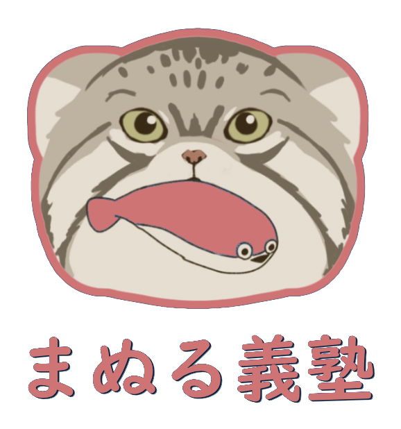

市民運営まぬる義塾は、成績を上げるための塾ではありません。
学校に行っていない子、勉強が苦手な子、発達特性がある子——
ひとりひとりの「やりたい」に寄り添い、
夢を叶える力を育む場所です。
既存の学習塾とは違います。
成績向上ではなく、
「夢を叶える力」を育むことが目的です。
学校に行っていないけれど勉強したい子。
発達特性がある子。学習がかなり遅れてしまっている子。
勉強が苦手な子。
そんな子どもたちが、自分のペースで、自分の夢に向かって学べる場所をつくりました。
地域のボランティアが伴走し、完全ボランティア運営で人件費ゼロ。月額は、生徒自身が金額を決めるドネーション制です。
対象：小学生・中学生・高校生 ｜ 通えるならどこからでも可
| 自習室の場所 | 大府市民間教育センター「りんごの樹」 愛知県大府市中央町6丁目25番地 セントロ大府201号 地図で見る → |
|---|---|
| 面談 | 週2回・各30分 オンライン |
| 自習室 | 使い放題 利用できる日時は公式LINEでご案内します |
| 自己管理 | Googleカレンダー＆ドキュメントで、勉強のスケジュールを自分で管理できるよう伴走します |
| 対象 | 小学生・中学生・高校生 通えるならどこからでも可 |
金額は、生徒自身が決めます。
お申し込み・ご相談を受け付けています。
公式LINEに「まぬる義塾希望」とお送りください。
そのあとの流れは、LINEでご案内します。
NPO法人 kimyo-na-manul 公式LINE